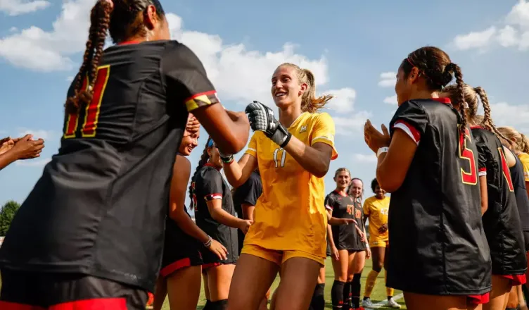
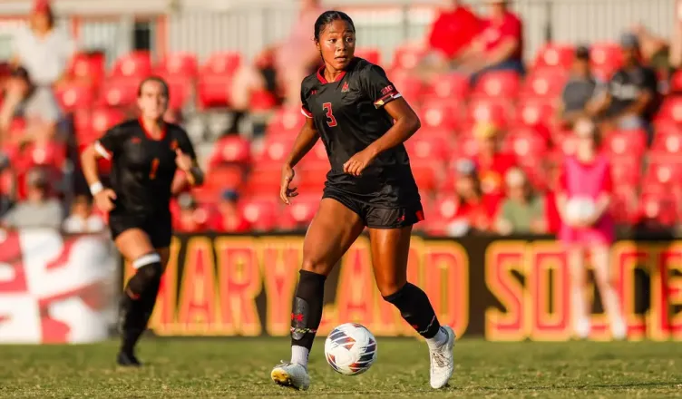
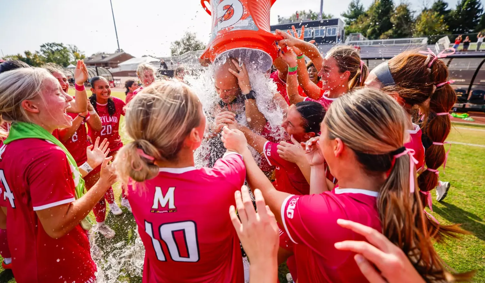

Henry Quach's Portfolio!
La Voz Latina
A Curse Within a Seat? How Red Bull Has Attempted Failure in Finding the Right Second Driver
Eagles Dominate With Revenge to Win Their Second Super Bowl
The Revival of the Washington Commanders After Years of Issues
WMUC Sports

Season Preview: Maryland Women’s Soccer on Track for Rebound Campaign with Revamped Roster

Late Goal Leads Women’s Soccer to Dramatic Victory Against Navy

Women’s Soccer Ends Scoring Drought in 2-0 Win Over Nebraska